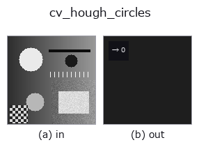

features op• 데이터 종류: image → feature
• 호출: fullseye.apply(img, "cv_hough_circles", a=0.5, b=0.5)(2-D 는 이미지 1 장 + 스칼라 노브 2 개 a,b∈[0,1] 모델)
• HALCON 대응: hough_circles(의미·매개변수는 HALCON 레퍼런스가 참고가 됩니다)
• GPU: 없음(CPU 참조 구현만)

*그림은 128×128 합성 입력에서 실제로 실행한 출력. 왼쪽이 입력, 오른쪽이 출력. 점군은 위에서 본 산점도(밝기 = z), 1-D 열은 꺾은선, 볼륨은 z 방향 최대값 투영, 동영상은 가운데 프레임, 복소 영상은 진폭이며, 그림이 되지 않는 반환값은 값 자체를 표시한다.*
*노브 a 는 출력을 바꾸지 않는다(실측: 0.1 / 0.5 / 0.9에서 동일).*
*노브 b 는 출력을 바꾸지 않는다(실측: 0.1 / 0.5 / 0.9에서 동일).*
허프 변환에 의한 원 검출(단일 스칼라 특징량, OpenCV 구현). 에지의 그래디언트 정보를 사용하는 HOUGH_GRADIENT 방식으로 원의 중심·반지름을 투표 방식으로 검출한다 —— 여기서는 검출된 원의 개수만을 반환한다(0개면 0).
HALCON의 hough_circles(Detect centers of circles for a specific radius using the Hough transform.)에 해당(근사: 중심 좌표가 아니라 개수만 반환). 구현은 cv2.HoughCircles(_u8(v), HOUGH_GRADIENT, dp=1, minDist=10+int(a*20), param1=100, param2=20+int(b*20), minRadius=3, maxRadius=20) —— a는 검출할 원 중심 사이의 최소 거리를 10〜30으로, b는 중심 검출 투표 임계값 param2(작을수록 오검출이 늘어남)를 20〜40으로 바꾼다. param1(내부 Canny 상한 임계값)과 반지름 범위(3〜20)는 고정.
전제 조건: 먼저 평활화할 것(이 op는 내부에서 평활화하지 않는다). HOUGH_GRADIENT는 화소마다의 그래디언트 방향으로 중심에 투표하므로, 잡음이 방향을 흩뜨리면 표가 모이지 않는다. OpenCV의 설명과 예제도 입력을 흐리게 한 뒤 넘긴다(GaussianBlur / medianBlur). 실측(2026-11-03, 96x96, 0.3 바탕에 0.6 원판, 잡음 σ 0.02): 평활화 없이는 반지름 6〜8의 원판 3개도 반지름 18의 원판 1개도 0개(cv2.HoughCircles를 직접 호출해도 None). gaussian a=0.5(σ 약 1.65 px)를 먼저 적용하면 3 / 4개를 바르게 센다. 0을 반환했을 때는 "원이 없다"인지 "표가 갈렸다"인지 구별할 수 없으므로, 잡음이 있는 영상에서는 반드시 평활화를 앞에 둔다.
• 샘플 데이터 카탈로그(DL URL / 라이선스) —— 2-D 는 skimage.data(BSD/public)+ 합성, 3-D 는 실데이터 소스(Stanford/PDS 등)의 DL URL.
• 연산자의 내력·참고문헌 —— 이 연산자 족의 바탕이 된 연구/기법의 출처.
• 알고리즘의 정전(저자·연도)과 용도는 위의 패밀리 사용 가이드에 적혀 있습니다.
아래 프로그램은 실제로 실행됨을 확인했습니다(그림과 같은 입력). Studio 도움말에서는 이 블록이 버튼이 되어 즉시 불러와 실행할 수 있습니다.
cv_hough_circles 0.50 0.50
• gallery2d_features — py -3.11 examples/gallery2d_features.py
feature 를 입력으로 받는 것)features)effective_bit_depth · blob_count · area_frac · count_contours · total_length · vol_count · sk_euler · sk_entropy_feat
*Provenance: ops.py — 2D 연산자 레지스트리. 이 op 노트는 tools/opdocs.py md 가 자동 생성합니다(직접 편집하지 마세요).*
© 2026 Kazufumi Furuse — Fullseye operator documentation. Licensed under Apache-2.0.